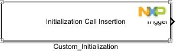
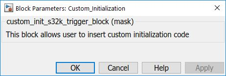

Initialization Call Insertion Block
The main scope of this type of block is to insert a function call, init_call_trigger, between the System Initialization and first System Task. Using this function the user will be able to write any register or make any desired modification before the model first step.
Block Image
Inputs:
- None
Outputs:
- Function-Call
Parameters and Dialog Box
Block Dependency
- None
Block Miscellaneous Details
- None